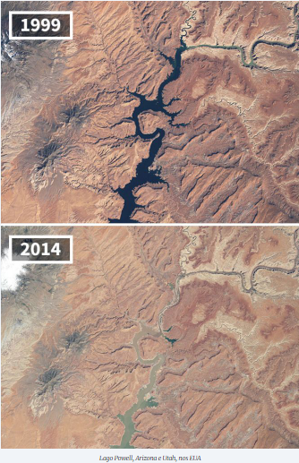

Legenda: os números sozinhos seguidos de ponto indicam o slide
Combustíveis fósseis
São eles:
- item 2: carvão mineral
- Gás natural
São provenientes da decomposição de seres vivos e maiores responsáveis pela emissão de gases de efeito estufa.
fonte : https://www.hypeness.com.br/2021/01/nasa-mostra-o-antes-e-o-depois-de-pontos-do-planeta-afetados-pelas-mudancas-climaticas/


Gráfico do consumo de energia proveniente de fontes renováveis e não renováveis no Brasil e no mundo para o ano de 2019:

 https://www.epe.gov.br/pt/abcdenergia/matriz-energetica-e-eletrica
https://www.epe.gov.br/pt/abcdenergia/matriz-energetica-e-eletrica

-
Comparação entre obtenção de energia por Soja e Microalgas
A soja é a principal matéria-prima para a produção do biodiesel no Brasil.
A soja é responsável por mais de 82% da produção de biodiesel no Brasil, de acordo com a Agência Nacional de Petróleo, Gás Natural e Biocombustíveis. (ANP).
E ela produz cerca de 0,2 a 0,4 toneladas de óleo por hectare.
Enquanto as microalgas produzem entre 0,1 à 0,23 toneladas de óleo por hectare.
Fontes: ALMEIDA, Regis Rodrigues de. "Biocombustíveis no Brasil"; Brasil Escola. Disponível em: https://brasilescola.uol.com.br/geografia/biocombustiveis-no-brasil.htm. Acesso em 13 de junho de 2022.
-
Vantagens das microalgas:
- item 1: Não precisam ser ‘Regadas’
- item 2: Não precisam de adubos (podem ser cultivadas em dejetos de suinocultura e águas residuais de esgotos)
- item 3: A colheita pode ser diária (não necessitando de épocas)
- item 4: Pode ser cultivada em diversos climas
- item 5: Pode ser cultivada em água salgada.
- Contexto Histórico
- As algas foram exploradas como combustível alternativo em 1978. Os preços da gasolina haviam disparado, as filas nos postos eram intermináveis e o governo estava procurando ajuda para aliviar a crise
- O Programa de Espécies Aquáticas, dirigido pelo Laboratório Nacional de Energia Renovável (EUA), pesquisou algas com alta produção de óleo, cultivadas em tanques, utilizando CO2 residual para fazer biodiesel
- Japão | Research Institute of Innovative Technology (RITE) - substituindo o sistema aberto pelo cultivo em fotobiorreatores, mais intensivo, com maiores possibilidades de controle e uma maior produtividade de biomassa por área quando comparado ao sistema aberto.
- No brasil…
- O Ministério da Ciência, Tecnologia e Inovação (MCTI), em parceria com a Secretaria Especial de Aquicultura e Pesca (SEAP/PR), lançou em 2008, através do Conselho Nacional de Desenvolvimento Científico e Tecnológico (CNPq), edital de pesquisa com o objetivo de selecionar projetos voltados para a aquicultura e uso de microalgas para a produção de biodiesel, no valor total de R$ 4,5 milhões.
- Outra ação do MCTI teve início em novembro de 2010, com a aprovação do Projeto MCT/FINEP de "Produção de biodiesel derivado de óleos de microalgas". O projeto reúne diferentes institutos de pesquisa como: UFSCar, UFES, UFPB, INT, UFPR, UFRJ, UFG, Tecpar e UFLA.
- Hoje
- 4 no Brasil:
- 2 no Nordeste (foco em nutrição
- 2 no interior de SP atendendo indústrias de cosméticos e rações ou projetos para tratamento de efluentes.
- Uma empresa referência no tema microalgas é a TerraVia (Solazyme). Possui unidade de produção em Orindiúva (SP).
- A espécie de microalga não realiza fotossíntese, mas se alimenta de açúcar.
- “Esses mercados podem se tornar maiores e rentáveis no futuro e ainda são ativos valiosos para nós. Porém, com os níveis de preços atuais do barril de petróleo, biocombustíveis nesse momento não são o principal driver econômico para nós”, revela o presidente da TerraVia / Bunge
referencia pros slides 8 e 9: https://www.scielo.br/j/qn/a/tgQT4yYWsDmdJJ7J86Y49JL/?lang=pt
https://www.embrapa.br/busca-de-noticias/-/noticia/20361833/pesquisa-encontra-microalgas-que-crescem-em-residuos-e-geram-biocombustiveis